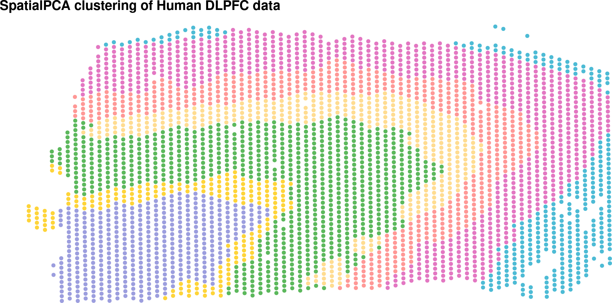

Here we perform a GSVA analysis of the 10x Visium human DLPFC data.
Start by importing processed data and gene sets.
library(SpatialExperiment)
spe.filt <- readRDS(file.path("_processed_data", "spe.filt.human_dlpfc.rds"))
dim(spe.filt)
[1] 11364 3591
cell_types <- readRDS(file.path("_processed_data", "cell_types.human_dlpfc.rds"))Select a subset of top highly-variable genes (HVGs).
library(scran)
S'està carregant el paquet requerit: scuttle
dec <- modelGeneVar(spe.filt, assay.type="logcounts")Figure 1 shows the mean-variance relationship.
fit <- metadata(dec)
plot(fit$mean, fit$var, xlab="mean of log-expression",
ylab="variance of log-expression")
curve(fit$trend(x), col="dodgerblue", add=TRUE, lwd=2)
Figure 1: Mean-variance relationship
Select top 10% HVGs.
top_hvgs <- getTopHVGs(dec, prop=0.1)
length(top_hvgs)
[1] 831Calculate PCA.
library(scater)
S'està carregant el paquet requerit: ggplot2
set.seed(123)
spe.filt <- runPCA(spe.filt, subset_row=top_hvgs)
reducedDimNames(spe.filt)
[1] "PCA" "TSNE_perplexity50" "TSNE_perplexity5"
[4] "TSNE_perplexity20" "TSNE_perplexity80" "UMAP_neighbors15" dim(reducedDim(spe.filt, "PCA"))
[1] 3591 50Here we perform a non-spatial graph-based clustering of the spots,
targeting 7 clusters, which is the number of anatomically annotated
groups of spots (six cortical layers and white matter) stored in the
column spatialLIBD.
table(colData(spe.filt)$spatialLIBD)
L1 L2 L3 L4 L5 L6 WM
262 251 987 218 671 689 513 k <- 19
g <- buildSNNGraph(spe.filt, k=k, use.dimred="PCA")
set.seed(123)
g_walk <- igraph::cluster_walktrap(g)
colLabels(spe.filt) <- factor(g_walk$membership)
table(colLabels(spe.filt))
1 2 3 4 5 6 7
293 664 1177 304 830 221 102 Figure 2 shows the clustering of the spots.
library(RColorBrewer)
library(patchwork)
library(ggspavis)
set.seed(123)
## image seems to be reversed and for this reason we set x_coord="pxl_col_in_fullres"
## and y_coord="pxl_row_in_fullres"
pltgt <- plotVisium(spe.filt, x_coord="pxl_col_in_fullres",
y_coord="pxl_row_in_fullres", point_size=0.75,
annotate="spatialLIBD",
pal=brewer.pal(nlevels(colLabels(spe.filt)), "Set1"))
pltcl <- plotVisium(spe.filt, x_coord="pxl_col_in_fullres",
y_coord="pxl_row_in_fullres", point_size=0.75, annotate="label",
pal=brewer.pal(nlevels(colLabels(spe.filt)), "Set1"))
(pltgt | pltcl)
Figure 2: Clustering of the spots
library(SpatialPCA)
LIBD <- CreateSpatialPCAObject(counts=as.matrix(assays(spe.filt)$counts), location=spatialCoords(spe.filt), project = "SpatialPCA",gene.type="spatial",sparkversion="sparkx",numCores_spark=5, customGenelist=NULL,min.loctions = 20, min.features=20)
## Use SCTransform function in Seurat to normalize data.
## Use sparkx function in SPARK to select spatially variable genes.
## ===== SPARK-X INPUT INFORMATION ====
## number of total samples: 3591
## number of total genes: 11364
## Running with 5 cores
## Testing With Projection Kernel
## Testing With Gaussian Kernel 1
## Testing With Gaussian Kernel 2
## Testing With Gaussian Kernel 3
## Testing With Gaussian Kernel 4
## Testing With Gaussian Kernel 5
## Testing With Cosine Kernel 1
## Testing With Cosine Kernel 2
## Testing With Cosine Kernel 3
## Testing With Cosine Kernel 4
## Testing With Cosine Kernel 5
## Identified 10097 spatial genes through SPARK-X function.
## Using top 3000 significant spatially variable genes.
start_time <- Sys.time()
LIBD = SpatialPCA_buildKernel(LIBD, kerneltype="gaussian", bandwidthtype="SJ",bandwidth.set.by.user=NULL)
## Selected kernel type is: gaussian
## The bandwidth is: 0.0458021928511147
## Calculating kernel matrix
## Finished calculating kernel matrix.LIBD = SpatialPCA_EstimateLoading(LIBD,fast=FALSE,SpatialPCnum=20)
[1] "Eigen decomposition on kernel matrix!"
[1] "Using all eigenvectors and eigenvalues in the Kernel matrix!"LIBD = SpatialPCA_SpatialPCs(LIBD, fast=FALSE)
end_time <- Sys.time()
T = end_time - start_time
T
Time difference of 2.098107 minsclusterlabel= walktrap_clustering(clusternum=7,latent_dat=LIBD@SpatialPCs,knearest=70 )
# for other Visium or ST data, the user can also set k nearest number as round(sqrt(dim(SpatialPCAobject@SpatialPCs)[2])) by default.
clusterlabel_refine = refine_cluster_10x(clusterlabels=clusterlabel,location=LIBD@location,shape="hexagon")cbp=c("#9C9EDE" ,"#5CB85C" ,"#E377C2", "#4DBBD5" ,"#FED439" ,"#FF9896", "#FFDC91")
spclus <- plot_cluster(location=cbind(-spatialCoords(spe.filt)[,2],spatialCoords(spe.filt)[,1]),clusterlabel=clusterlabel_refine,pointsize=1.5 ,title_in=paste0("SpatialPCA clustering of Human DLPFC data"),color_in=cbp)
spclus
Run GSVA with default parameters.
library(GSVA)
library(BiocParallel)
gsvaPar <- gsvaParam(spe.filt, cell_types, assay="logcounts",
minSize=5, kcdf = 'none')
spe.filt.es <- gsva(gsvaPar, verbose=FALSE, BPPARAM=MulticoreParam(workers=3))
dim(spe.filt.es)
[1] 50 3591spe.filt.es
class: SpatialExperiment
dim: 50 3591
metadata(0):
assays(1): es
rownames(50): Astrocyte CD4..T.cell ... SCZ.PGC.GWAS SCZ.SNV
rowData names(1): gs
colnames(3591): AAACAAGTATCTCCCA-1 AAACAATCTACTAGCA-1 ...
TTGTTTGTATTACACG-1 TTGTTTGTGTAAATTC-1
colData names(80): sample_id Cluster ... sizeFactor label
reducedDimNames(0):
mainExpName: NULL
altExpNames(0):
spatialCoords names(2) : pxl_col_in_fullres pxl_row_in_fullres
imgData names(4): sample_id image_id data scaleFactorlibrary(nnSVG)
system.time(spe.nnsvg <- nnSVG(spe.filt[top_hvgs,], assay_name = "logcounts", BPPARAM=MulticoreParam(workers=5)))
usuari sistema transcorregut
2931.100 4073.542 1001.523 system.time(spe.nnsvg.es <-nnSVG(spe.filt.es, assay_name = "es", BPPARAM=MulticoreParam(workers=4)))
usuari sistema transcorregut
203.465 294.224 76.814 # number of significant SV Genes and Gene Sets
table(rowData(spe.nnsvg)$padj <= 0.05)
FALSE TRUE
92 739 table(rowData(spe.nnsvg.es)$padj <= 0.05)
FALSE TRUE
3 47
rowData(spe.nnsvg)[order(rowData(spe.nnsvg)$rank)[1:5], ]
DataFrame with 5 rows and 23 columns
source type gene_id gene_version
<factor> <factor> <character> <character>
ENSG00000197971 ensembl_havana gene ENSG00000197971 14
ENSG00000123560 ensembl_havana gene ENSG00000123560 13
ENSG00000198804 insdc gene ENSG00000198804 2
ENSG00000110484 ensembl_havana gene ENSG00000110484 6
ENSG00000131095 ensembl_havana gene ENSG00000131095 12
gene_name gene_source gene_biotype
<character> <character> <character>
ENSG00000197971 MBP ensembl_havana protein_coding
ENSG00000123560 PLP1 ensembl_havana protein_coding
ENSG00000198804 MT-CO1 insdc protein_coding
ENSG00000110484 SCGB2A2 ensembl_havana protein_coding
ENSG00000131095 GFAP ensembl_havana protein_coding
gene_search is_top_hvg sigma.sq tau.sq
<character> <logical> <numeric> <numeric>
ENSG00000197971 MBP; ENSG00000197971 TRUE 1.4700626 0.387177
ENSG00000123560 PLP1; ENSG00000123560 TRUE 1.0063715 0.623055
ENSG00000198804 MT-CO1; ENSG00000198.. TRUE 0.0937191 0.053727
ENSG00000110484 SCGB2A2; ENSG0000011.. TRUE 18.1109288 0.365768
ENSG00000131095 GFAP; ENSG00000131095 TRUE 0.7006729 0.519666
phi loglik runtime mean var spcov
<numeric> <numeric> <numeric> <numeric> <numeric> <numeric>
ENSG00000197971 1.35424 -3671.416 3.251 3.53333 2.482468 0.3431501
ENSG00000123560 10.48222 -4741.616 3.712 2.58666 2.896605 0.3878288
ENSG00000198804 11.17711 -385.219 1.329 7.02010 0.226935 0.0436085
ENSG00000110484 1.53764 -4588.685 3.406 1.86094 2.338538 2.2868556
ENSG00000131095 16.58370 -4500.583 1.730 1.85011 2.060159 0.4524400
prop_sv loglik_lm LR_stat rank pval padj
<numeric> <numeric> <numeric> <numeric> <numeric> <numeric>
ENSG00000197971 0.791531 -6727.47 6112.11 1 0 0
ENSG00000123560 0.617623 -7004.49 4525.75 2 0 0
ENSG00000198804 0.635616 -2432.02 4093.59 3 0 0
ENSG00000110484 0.980204 -6620.23 4063.09 4 0 0
ENSG00000131095 0.574162 -6392.67 3784.17 5 0 0rowData(spe.nnsvg.es)[order(rowData(spe.nnsvg.es)$rank)[1:10], ]
DataFrame with 10 rows and 15 columns
gs
<CharacterList>
Mature.oligodendrocyte ENSG00000204655,ENSG00000123560,ENSG00000173786,...
Oligodendrocyte ENSG00000175206,ENSG00000175130,ENSG00000116133,...
Microglial.cell ENSG00000078808,ENSG00000116251,ENSG00000142583,...
Mid.radical.glial.cell ENSG00000197921,ENSG00000173406,ENSG00000132688,...
Astrocyte ENSG00000117318,ENSG00000177606,ENSG00000162599,...
Glial.cell ENSG00000160678,ENSG00000079215,ENSG00000204655,...
Lake.et.al.Science.Ex1 ENSG00000115756,ENSG00000135919,ENSG00000113100,...
Oligodendrocyte.progenitor.cell ENSG00000132692,ENSG00000144230,ENSG00000134853,...
Neuron ENSG00000020129,ENSG00000162409,ENSG00000117569,...
Gene_SFARI_all ENSG00000183044,ENSG00000064687,ENSG00000087085,...
sigma.sq tau.sq phi loglik
<numeric> <numeric> <numeric> <numeric>
Mature.oligodendrocyte 0.051760089 0.020496709 8.25637981 1319.18
Oligodendrocyte 0.018177771 0.001817777 1.00000000 5856.86
Microglial.cell 0.002211274 0.001377564 32.18139858 5767.56
Mid.radical.glial.cell 0.004124360 0.004480564 27.96337498 4001.28
Astrocyte 0.002643844 0.002617861 25.24216947 4964.10
Glial.cell 0.015332265 0.025606447 7.21814535 1240.54
Lake.et.al.Science.Ex1 0.006647546 0.012231093 11.53036223 2530.57
Oligodendrocyte.progenitor.cell 0.008961859 0.020472383 0.00202358 1745.73
Neuron 0.001132983 0.001731306 38.76953385 5742.74
Gene_SFARI_all 0.000229339 0.000541473 14.68968087 8137.07
runtime mean var spcov
<numeric> <numeric> <numeric> <numeric>
Mature.oligodendrocyte 5.491 NA NA NA
Oligodendrocyte 1.154 NA NA NA
Microglial.cell 3.907 NA NA NA
Mid.radical.glial.cell 5.590 NA NA NA
Astrocyte 4.472 NA NA NA
Glial.cell 4.963 NA NA NA
Lake.et.al.Science.Ex1 1.616 NA NA NA
Oligodendrocyte.progenitor.cell 5.955 NA NA NA
Neuron 6.147 NA NA NA
Gene_SFARI_all 2.962 NA NA NA
prop_sv loglik_lm LR_stat rank
<numeric> <numeric> <numeric> <numeric>
Mature.oligodendrocyte 0.716335 -2111.052 6860.47 1
Oligodendrocyte 0.909091 2962.735 5788.25 2
Microglial.cell 0.616153 4278.861 2977.40 3
Mid.radical.glial.cell 0.479302 2866.222 2270.12 4
Astrocyte 0.502469 3878.357 2171.48 5
Glial.cell 0.374518 343.234 1794.61 6
Lake.et.al.Science.Ex1 0.352120 1802.148 1456.85 7
Oligodendrocyte.progenitor.cell 0.304471 1070.772 1349.91 8
Neuron 0.395555 5126.095 1233.30 9
Gene_SFARI_all 0.297529 7565.368 1143.41 10
pval padj
<numeric> <numeric>
Mature.oligodendrocyte 0 0
Oligodendrocyte 0 0
Microglial.cell 0 0
Mid.radical.glial.cell 0 0
Astrocyte 0 0
Glial.cell 0 0
Lake.et.al.Science.Ex1 0 0
Oligodendrocyte.progenitor.cell 0 0
Neuron 0 0
Gene_SFARI_all 0 0Let’s check how the genes in the most spatially variable gene sets behave.
# Most spatially variable gene set
for(j in 1:4){
gs <- as.character(unlist(rowData(spe.nnsvg.es)[order(rowData(spe.nnsvg.es)$rank)[j], "gs"]))
svgset <- rownames(rowData(spe.nnsvg.es)[order(rowData(spe.nnsvg.es)$rank)[j], ])
print(paste("Length of the gene set",svgset,length(gs),"genes"))
svgs <- rowData(spe.nnsvg)[gs,]
svgs <- svgs[order(svgs$rank),][1:5,]
i<-1
plts <- list()
for (g in rownames(svgs)) {
plts[[svgset]] <- plotVisium(spe.filt.es, x_coord="pxl_col_in_fullres",
y_coord="pxl_row_in_fullres", point_size=0.5,
assay="es", annotate=svgset, facets=NULL) +
ggtitle(svgset) + theme(plot.title=element_text(hjust=0.5)) +
theme(legend.title=element_blank()) + labs(tag=letters[i])
plts[[g]] <- plotVisium(spe.filt, x_coord="pxl_col_in_fullres",
y_coord="pxl_row_in_fullres", point_size=0.5,
assay="logcounts", annotate=g, facets=NULL) +
ggtitle(g) + theme(plot.title=element_text(hjust=0.5)) +
theme(legend.title=element_blank()) + labs(tag=letters[i])
i <- i + 1
}
show(wrap_plots(plts, nrow=ceiling(length(plts)/2)))
}
[1] "Length of the gene set Mature.oligodendrocyte 5 genes"[1] "Length of the gene set Oligodendrocyte 165 genes"[1] "Length of the gene set Microglial.cell 250 genes"[1] "Length of the gene set Mid.radical.glial.cell 20 genes"# Moran’s I estimation
Here we calculate Moran’s I for each gene set in the GSVA enrichment scores (ES) calculated with default parameters.
library(SpatialFeatureExperiment)
library(Voyager)
sfe <- toSpatialFeatureExperiment(spe.filt.es)
vg <- findVisiumGraph(spe.filt.es,
sample_id="151673",
zero.policy=TRUE)
colGraph(sfe, "visium", sample_id="151673") <- vg
moransi <- rowData(runUnivariate(sfe, type="moran.mc", nsim = 1000, colGraphName="visium",
exprs_values="es", zero.policy=TRUE))
moransi <- moransi[, c(2,4)]
colnames(moransi) <- c("statistic", "p.value")Figure 3 shows GSVA scores for SFARI gene sets.
Figure 3: GSVA scores for SFARI gene sets
SFARI gene sets spatial autocorrelation
moransi[names(cell_types[c(96:98)]),]
DataFrame with 3 rows and 2 columns
statistic p.value
<numeric> <numeric>
Gene_SFARI_all 0.350488 0.000999001
Gene_SFARI_high 0.286730 0.000999001
Gene_SFARI_syndromic 0.163606 0.000999001Figure 4 shows GSVA scores for Birnbaum et al gene sets.
Figure 4: GSVA scores for Birnbaum et al gene sets
moransi[names(cell_types[c(99:108)]),]
DataFrame with 10 rows and 2 columns
statistic p.value
<numeric> <numeric>
ASD.CNV 0.1085017 0.000999001
ASD.DATABASE 0.1803301 0.000999001
BPAD.GWAS 0.0445744 0.000999001
ID 0.1154954 0.000999001
NDD 0.0116347 0.106893107
Neurodegenerative 0.0873586 0.000999001
SCZ.CNV 0.1059468 0.000999001
SCZ.Meta.analysis 0.1044286 0.000999001
SCZ.PGC.GWAS 0.0758406 0.000999001
SCZ.SNV 0.0678499 0.000999001Here we use the previously selected autocorrelated gene sets to annotate
the gene-level clusters. We first define the following function for that
purpose, which takes as input an SpatialExperiment object with clusters
annotated in the label column metadata, and return a vector with as many
values as clusters and the most similar gene set for each cluster, in the
corresponding position.
clustertogeneset <- function(spe, p.value=0.01) {
require(limma)
y <- assay(spe)
f <- colData(spe)$spatialLIBD
stopifnot(is.factor(f) && length(f) > 1) ## QC
nl <- nlevels(f)
mod <- model.matrix(~ 0 + f)
genesets <- c()
for (targetcluster in levels(f)) {
fit <- lmFit(y, mod)
## compare mean of the target cluster against the mean of
## all other clusters
cf <- sprintf("f%s=f%s-(%s)/%s", targetcluster, targetcluster,
paste(sprintf("f%s", setdiff(levels(f), targetcluster)),
collapse="+"),
nl-1)
contrast.matrix <- makeContrasts(contrasts=cf, levels=mod)
fit <- contrasts.fit(fit, contrast.matrix)
fit <- eBayes(fit)
tt <- topTable(fit, coef=1, n=Inf)
tt <- tt[tt$adj.P.Val < p.value, , drop=FALSE]
genesets <- c(genesets, rownames(tt)[1])
}
genesets
}Annotate gene sets to clusters and keep the unique ones using the GSVA ES calculated with default parameters.
annotatedgs <- clustertogeneset(spe.filt.es.sig)
annotatedgs
[1] "Astrocyte" "Lake.et.al.Science.Ex1" "Oligodendrocyte"
[4] "Oligodendrocyte" "Mature.oligodendrocyte" "Lake.et.al.Science.Ex1"
[7] "Mature.oligodendrocyte"annotatedgs <- unique(annotatedgs)
annotatedgs
[1] "Astrocyte" "Lake.et.al.Science.Ex1" "Oligodendrocyte"
[4] "Mature.oligodendrocyte"Figure 5 shows these unique gene sets that mostly correlated with some of the clusters.
Figure 5: Annotation of clusters with gene sets autocorrelated with GSVA ES calculated with default parameters
(a) Original tissue image. (b) Spot annotation by gene-level clustering. (c) to (h) enrichment scores for each of the significantly autocorrelated gene sets that mostly correlated with at least one of the gene-level clusters.
Finally, store the GSVA ES calculated with default parameters.
saveRDS(spe.filt.es,
file=file.path("_processed_data",
"spe.filt.es.human_dlpfc.rds"))sessionInfo()
R version 4.4.0 (2024-04-24)
Platform: x86_64-pc-linux-gnu
Running under: Ubuntu 22.04.3 LTS
Matrix products: default
BLAS: /usr/lib/x86_64-linux-gnu/openblas-pthread/libblas.so.3
LAPACK: /usr/lib/x86_64-linux-gnu/openblas-pthread/libopenblasp-r0.3.20.so; LAPACK version 3.10.0
locale:
[1] LC_CTYPE=ca_ES.UTF-8 LC_NUMERIC=C
[3] LC_TIME=ca_ES.UTF-8 LC_COLLATE=ca_ES.UTF-8
[5] LC_MONETARY=ca_ES.UTF-8 LC_MESSAGES=ca_ES.UTF-8
[7] LC_PAPER=ca_ES.UTF-8 LC_NAME=C
[9] LC_ADDRESS=C LC_TELEPHONE=C
[11] LC_MEASUREMENT=ca_ES.UTF-8 LC_IDENTIFICATION=C
time zone: Europe/Madrid
tzcode source: system (glibc)
attached base packages:
[1] stats4 stats graphics grDevices utils datasets methods
[8] base
other attached packages:
[1] limma_3.60.2 Voyager_1.6.0
[3] SpatialFeatureExperiment_1.6.1 nnSVG_1.8.0
[5] BiocParallel_1.38.0 GSVA_1.52.2
[7] RSpectra_0.16-1 SpatialPCA_1.3.0
[9] ggspavis_1.10.0 patchwork_1.2.0
[11] RColorBrewer_1.1-3 scater_1.32.0
[13] ggplot2_3.5.1 scran_1.32.0
[15] scuttle_1.14.0 SpatialExperiment_1.14.0
[17] SingleCellExperiment_1.26.0 SummarizedExperiment_1.34.0
[19] Biobase_2.64.0 GenomicRanges_1.56.0
[21] GenomeInfoDb_1.40.1 IRanges_2.38.0
[23] S4Vectors_0.42.0 BiocGenerics_0.50.0
[25] MatrixGenerics_1.16.0 matrixStats_1.3.0
[27] kableExtra_1.4.0 knitr_1.47
[29] BiocStyle_2.32.0
loaded via a namespace (and not attached):
[1] R.methodsS3_1.8.2 GSEABase_1.66.0
[3] tiff_0.1-12 goftest_1.2-3
[5] Biostrings_2.72.0 HDF5Array_1.32.0
[7] vctrs_0.6.5 spatstat.random_3.2-3
[9] digest_0.6.35 png_0.1-8
[11] proxy_0.4-27 ggrepel_0.9.5
[13] deldir_2.0-4 parallelly_1.37.1
[15] magick_2.8.3 MASS_7.3-60.2
[17] reshape2_1.4.4 scico_1.5.0
[19] httpuv_1.6.15 foreach_1.5.2
[21] withr_3.0.0 xfun_0.44
[23] survival_3.6-4 memoise_2.0.1
[25] s2_1.1.6 ggbeeswarm_0.7.2
[27] systemfonts_1.1.0 zoo_1.8-12
[29] pbapply_1.7-2 R.oo_1.26.0
[31] spData_2.3.1 KEGGREST_1.44.0
[33] promises_1.3.0 SPARK_1.1.1
[35] httr_1.4.7 globals_0.16.3
[37] fitdistrplus_1.1-11 rhdf5filters_1.16.0
[39] rhdf5_2.48.0 rstudioapi_0.16.0
[41] UCSC.utils_1.0.0 units_0.8-5
[43] miniUI_0.1.1.1 generics_0.1.3
[45] curl_5.2.1 zlibbioc_1.50.0
[47] ScaledMatrix_1.12.0 polyclip_1.10-6
[49] GenomeInfoDbData_1.2.12 SparseArray_1.4.8
[51] fftwtools_0.9-11 xtable_1.8-4
[53] stringr_1.5.1 pracma_2.4.4
[55] doParallel_1.0.17 evaluate_0.23
[57] S4Arrays_1.4.1 BiocFileCache_2.12.0
[59] bookdown_0.39 irlba_2.3.5.1
[61] colorspace_2.1-0 filelock_1.0.3
[63] ROCR_1.0-11 reticulate_1.37.0
[65] spatstat.data_3.0-4 magrittr_2.0.3
[67] lmtest_0.9-40 spdep_1.3-4
[69] later_1.3.2 viridis_0.6.5
[71] lattice_0.22-6 spatstat.geom_3.2-9
[73] future.apply_1.11.2 scattermore_1.2
[75] XML_3.99-0.16.1 cowplot_1.1.3
[77] RcppAnnoy_0.0.22 class_7.3-22
[79] pillar_1.9.0 nlme_3.1-164
[81] iterators_1.0.14 EBImage_4.46.0
[83] compiler_4.4.0 beachmat_2.20.0
[85] stringi_1.8.4 sf_1.0-16
[87] tensor_1.5 plyr_1.8.9
[89] crayon_1.5.2 abind_1.4-5
[91] locfit_1.5-9.9 sp_2.1-4
[93] terra_1.7-78 bit_4.0.5
[95] dplyr_1.1.4 codetools_0.2-20
[97] BiocSingular_1.20.0 openssl_2.2.0
[99] bslib_0.7.0 e1071_1.7-14
[101] plotly_4.10.4 mime_0.12
[103] splines_4.4.0 Rcpp_1.0.12
[105] fastDummies_1.7.3 dbplyr_2.5.0
[107] sparseMatrixStats_1.16.0 blob_1.2.4
[109] utf8_1.2.4 listenv_0.9.1
[111] DelayedMatrixStats_1.26.0 rdist_0.0.5
[113] tibble_3.2.1 Matrix_1.7-0
[115] statmod_1.5.0 svglite_2.1.3
[117] pkgconfig_2.0.3 tools_4.4.0
[119] BRISC_1.0.5 cachem_1.1.0
[121] RSQLite_2.3.7 viridisLite_0.4.2
[123] DBI_1.2.2 fastmap_1.2.0
[125] rmarkdown_2.27 scales_1.3.0
[127] grid_4.4.0 ica_1.0-3
[129] Seurat_5.1.0 sass_0.4.9
[131] BiocManager_1.30.23 dotCall64_1.1-1
[133] graph_1.82.0 RANN_2.6.1
[135] farver_2.1.2 wk_0.9.1
[137] yaml_2.3.8 cli_3.6.2
[139] purrr_1.0.2 leiden_0.4.3.1
[141] lifecycle_1.0.4 askpass_1.2.0
[143] uwot_0.2.2 bluster_1.14.0
[145] DropletUtils_1.24.0 annotate_1.82.0
[147] gtable_0.3.5 rjson_0.2.21
[149] umap_0.2.10.0 ggridges_0.5.6
[151] progressr_0.14.0 parallel_4.4.0
[153] jsonlite_1.8.8 edgeR_4.2.0
[155] RcppHNSW_0.6.0 bitops_1.0-7
[157] bit64_4.0.5 Rtsne_0.17
[159] spatstat.utils_3.0-4 BiocNeighbors_1.22.0
[161] SeuratObject_5.0.2 matlab_1.0.4
[163] ggside_0.3.1 jquerylib_0.1.4
[165] highr_0.11 metapod_1.12.0
[167] dqrng_0.4.1 zeallot_0.1.0
[169] R.utils_2.12.3 lazyeval_0.2.2
[171] shiny_1.8.1.1 htmltools_0.5.8.1
[173] sctransform_0.4.1 tinytex_0.51
[175] glue_1.7.0 spam_2.10-0
[177] XVector_0.44.0 RCurl_1.98-1.14
[179] classInt_0.4-10 jpeg_0.1-10
[181] gridExtra_2.3 boot_1.3-30
[183] igraph_2.0.3 R6_2.5.1
[185] tidyr_1.3.1 CompQuadForm_1.4.3
[187] labeling_0.4.3 cluster_2.1.6
[189] Rhdf5lib_1.26.0 memuse_4.2-3
[191] DelayedArray_0.30.1 tidyselect_1.2.1
[193] vipor_0.4.7 xml2_1.3.6
[195] AnnotationDbi_1.66.0 future_1.33.2
[197] sfheaders_0.4.4 rsvd_1.0.5
[199] munsell_0.5.1 KernSmooth_2.23-24
[201] data.table_1.15.4 htmlwidgets_1.6.4
[203] rlang_1.1.3 spatstat.sparse_3.0-3
[205] spatstat.explore_3.2-7 pdist_1.2.1
[207] ggnewscale_0.4.10 fansi_1.0.6
[209] beeswarm_0.4.0